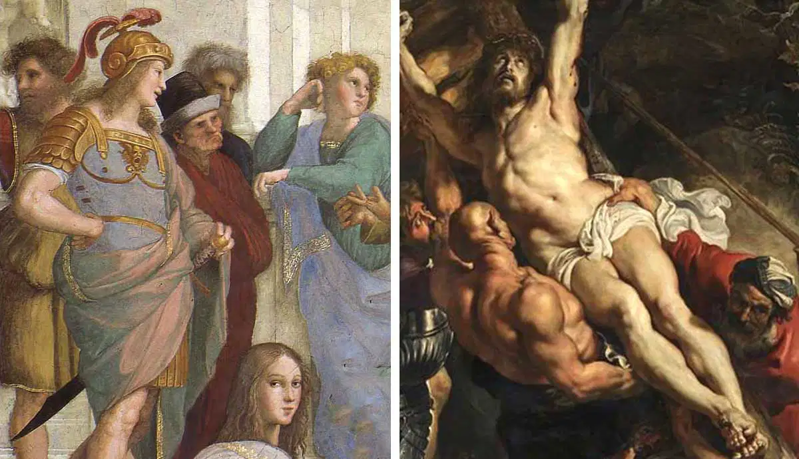

Del naturalismo a los excesos
1. CONTEXTO HISTÓRICO
El Barroco es el periodo comprendido entre 1600 y 1750, aproximadamente. Durante estos años, las monarquías absolutas dominan Europa, y tanto la Iglesia como la nobleza utilizan el arte para demostrar su poder y riqueza. En esta época florecen la pintura (Velázquez, Rubens), la literatura (Lope de Vega, Molière) y la ciencia (Galileo, Newton). La palabra barroco significa recargado o adornado, y resume el gusto por el exceso y la emoción. La mentalidad barroca combina razón y sentimiento: se busca la perfección técnica y, al mismo tiempo, conmover al público.
Para entender el cambio de mentalidad del Renacimiento al Barroco os dejo con estas dos obras de arte:
- Izquierda: La escuela de Atenas de Rafael Sanzio -> obra plana, con pocas sombras y detalles.
- Derecha: La elevación de la cruz de P.P. Rubens -> obra con mucho contraste, movimiento y detalles.
